Color cells on a dimensionality reduction by feature values (assay genes or numeric metadata).
Usage
FeatureDimPlot(
srt,
features,
reduction = NULL,
dims = c(1, 2),
split.by = NULL,
cells = NULL,
layer = "data",
assay = NULL,
show_stat = ifelse(identical(theme_use, "theme_blank"), FALSE, TRUE),
palette = ifelse(isTRUE(compare_features), "Set1", "Spectral"),
palcolor = NULL,
pt.size = NULL,
pt.alpha = 1,
bg_cutoff = 0,
bg_color = "grey80",
keep_scale = "feature",
lower_quantile = 0,
upper_quantile = 0.99,
lower_cutoff = NULL,
upper_cutoff = NULL,
add_density = FALSE,
density_color = "grey80",
density_filled = FALSE,
density_filled_palette = "Greys",
density_filled_palcolor = NULL,
cells.highlight = NULL,
cols.highlight = "black",
sizes.highlight = 1,
alpha.highlight = 1,
stroke.highlight = 0.5,
calculate_coexp = FALSE,
compare_features = FALSE,
color_blend_mode = c("blend", "average", "screen", "multiply"),
label = FALSE,
label.size = 4,
label.fg = "white",
label.bg = "black",
label.bg.r = 0.1,
label_insitu = FALSE,
label_repel = FALSE,
label_repulsion = 20,
label_point_size = 1,
label_point_color = "black",
label_segment_color = "black",
lineages = NULL,
lineages_trim = c(0.01, 0.99),
lineages_span = 0.75,
lineages_palette = "Dark2",
lineages_palcolor = NULL,
lineages_arrow = grid::arrow(length = grid::unit(0.1, "inches")),
lineages_linewidth = 1,
lineages_line_bg = "white",
lineages_line_bg_stroke = 0.5,
lineages_whiskers = FALSE,
lineages_whiskers_linewidth = 0.5,
lineages_whiskers_alpha = 0.5,
graph = NULL,
edge_size = c(0.05, 0.5),
edge_alpha = 0.1,
edge_color = "grey40",
hex = FALSE,
hex.linewidth = 0.5,
hex.color = "grey90",
hex.bins = 50,
hex.binwidth = NULL,
raster = NULL,
raster.dpi = c(512, 512),
aspect.ratio = 1,
title = NULL,
subtitle = NULL,
xlab = NULL,
ylab = NULL,
legend.position = "right",
legend.direction = "vertical",
legend.title = NULL,
theme_use = "theme_scop",
theme_args = list(),
combine = TRUE,
nrow = NULL,
ncol = NULL,
byrow = TRUE,
force = FALSE,
seed = 11,
verbose = TRUE
)Arguments
- srt
A
Seuratobject.- features
Features to plot: a character vector or a named list of assay gene names or numeric metadata columns.
- reduction
Reduction to plot.
NULLuses DefaultReduction.- dims
Length-2 vector of dimensions to plot.
- split.by
Metadata column to facet by.
- cells
Cell names to include.
- layer
Assay layer to use.
- assay
Assay to use.
NULLuses the default assay.- show_stat
Show cell-count statistics on the plot.
- palette, palcolor
Palette name (thisplot::show_palettes) or custom colors.
- pt.size, pt.alpha
Point size and transparency.
pt.size = NULLscales withsqrt(n)(minimum0.3). Rasterized points keep at least a two-pixel radius atraster.dpi = c(512, 512)and scale withraster.dpi.- bg_cutoff
Values below this cutoff are colored with
bg_color.- bg_color
Color for background /
NApoints.- keep_scale
Color scale across panels:
NULL: each panel is scaled independently (not comparable)."feature": scale each feature acrosssplit.bypanels."all": one scale for every feature and panel.
- lower_quantile, upper_quantile, lower_cutoff, upper_cutoff
Per-feature quantile or absolute cutoffs for the color scale.
- add_density, density_color, density_filled, density_filled_palette, density_filled_palcolor
Density contours;
density_filleddraws filled bands.- cells.highlight, cols.highlight, sizes.highlight, alpha.highlight, stroke.highlight
Cells to highlight and their appearance.
TRUEhighlights all cells.- calculate_coexp
Plot the geometric mean of the features.
- compare_features
Show multiple features on one plot.
- color_blend_mode
Blend mode when
compare_features = TRUE.- label
Label high-expressing cells.
- label_insitu
Use feature names instead of numbers when
compare_features = TRUE.- label_repel, label_repulsion, label_point_size, label_point_color, label_segment_color
Repel labels away from cluster centers.
- lineages, lineages_trim, lineages_span, lineages_palette, lineages_palcolor, lineages_arrow, lineages_linewidth, lineages_line_bg, lineages_line_bg_stroke, lineages_whiskers, lineages_whiskers_linewidth, lineages_whiskers_alpha
Pseudotime lineages as stats::loess curves. See grid::arrow for
lineages_arrow.- graph, edge_size, edge_alpha, edge_color
Neighbor-graph edges.
- hex.color
Border color of hexagonal bins.
- raster, raster.dpi
Rasterize points.
raster = NULLrasterizes when there are more than 100,000 cells.- aspect.ratio
Panel aspect ratio.
- title, subtitle, xlab, ylab
Plot labels.
- legend.position, legend.direction, legend.title
Legend placement (
"none","left","right","bottom","top"), direction, and title.legend.title = NULLuses the group name.- theme_use, theme_args
Theme name or function, plus extra theme arguments.
- combine, nrow, ncol, byrow
Combine plots with patchwork.
combine = FALSEreturns a list of ggplots.- force
Draw even when more than 100 features are requested.
- seed
Random seed.
- verbose
Print progress messages.
Examples
data(pancreas_sub)
pancreas_sub <- RunStandardWorkflow(pancreas_sub)
#> ℹ [2026-08-21 15:58:32] Start standard processing workflow...
#> ℹ [2026-08-21 15:58:32] Checking a list of <Seurat>...
#> ! [2026-08-21 15:58:32] Data 1/1 of the `srt_list` is "unknown"
#> Warning: Data 1/1 of the `srt_list` is "unknown"
#> ℹ [2026-08-21 15:58:32] Perform `NormalizeData()` with `normalization.method = 'LogNormalize'` on 1/1 of `srt_list`...
#> ℹ [2026-08-21 15:58:32] Perform `FindVariableFeatures()` on 1/1 of `srt_list`...
#> ℹ [2026-08-21 15:58:32] Use the separate HVF from `srt_list`
#> ℹ [2026-08-21 15:58:32] Number of available HVF: 2000
#> ℹ [2026-08-21 15:58:32] Finished check
#> ℹ [2026-08-21 15:58:32] Perform `ScaleData()`
#> ℹ [2026-08-21 15:58:32] Perform pca linear dimension reduction
#> ℹ [2026-08-21 15:58:33] Use stored estimated dimensions 1:23 for Standardpca
#> ℹ [2026-08-21 15:58:33] Perform `Seurat::FindClusters()` with `cluster_algorithm = 'louvain'` and `cluster_resolution = 0.6`
#> ℹ [2026-08-21 15:58:33] Reorder clusters...
#> ℹ [2026-08-21 15:58:33] Skip `log1p()` because `layer = data` is not "counts"
#> ℹ [2026-08-21 15:58:33] Perform umap nonlinear dimension reduction
#> ✔ [2026-08-21 15:58:39] Standard processing workflow completed
FeatureDimPlot(
pancreas_sub,
features = "G2M_score", reduction = "UMAP"
)
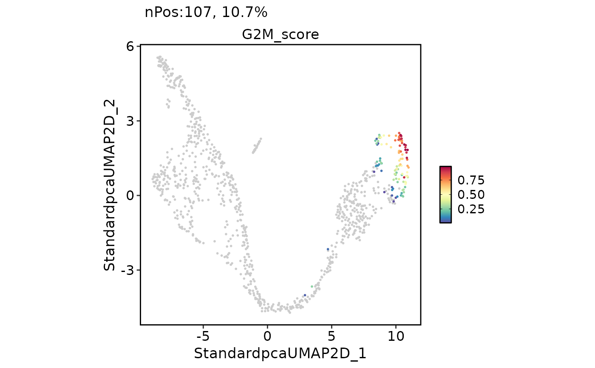
FeatureDimPlot(
pancreas_sub,
features = "G2M_score",
reduction = "UMAP",
bg_cutoff = -Inf
)
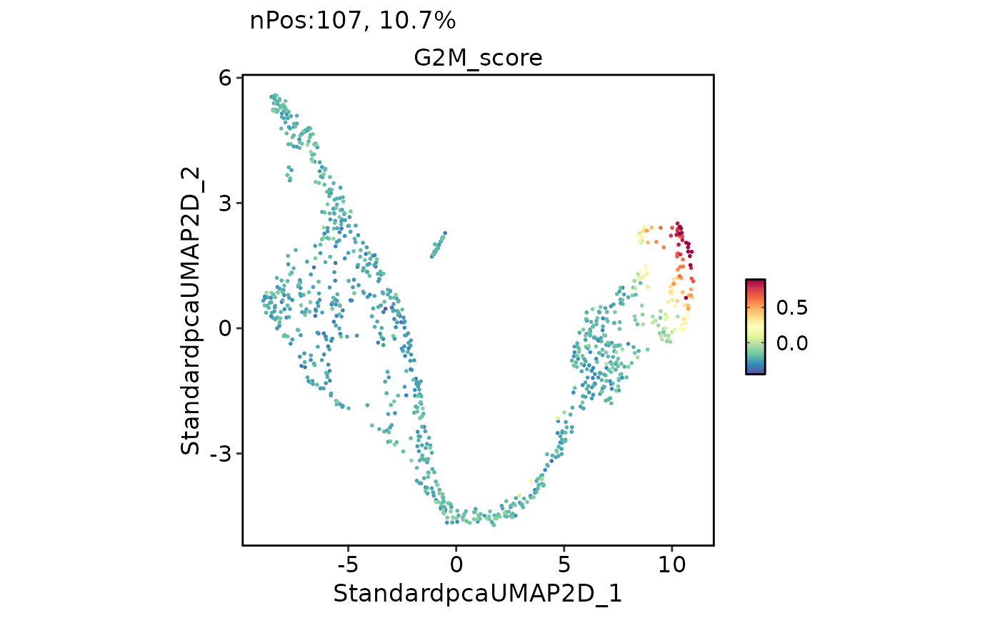
FeatureDimPlot(
pancreas_sub,
features = "G2M_score",
reduction = "UMAP",
theme_use = "theme_blank"
)
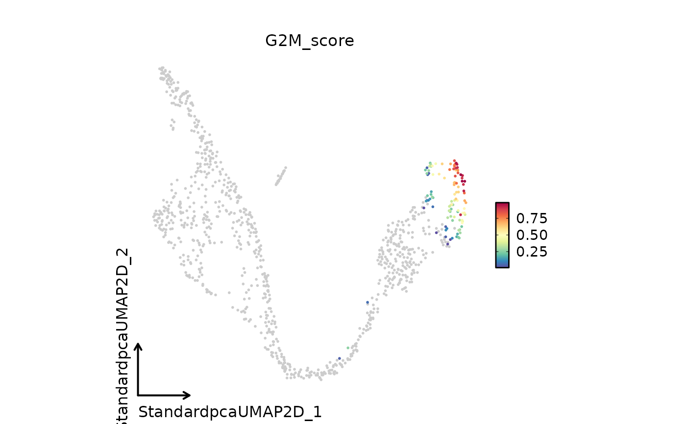
FeatureDimPlot(
pancreas_sub,
features = "G2M_score",
reduction = "UMAP",
theme_use = ggplot2::theme_classic,
theme_args = list(base_size = 16)
)
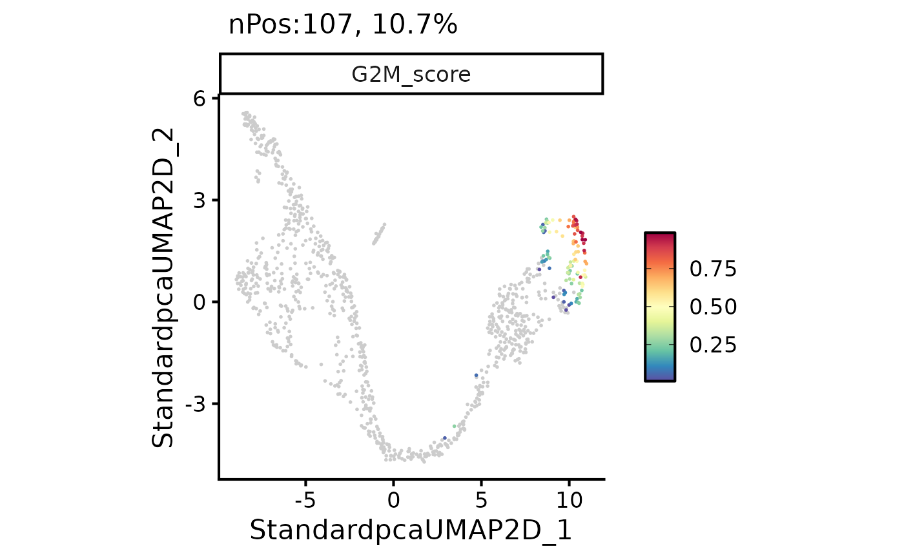
FeatureDimPlot(
pancreas_sub,
features = "G2M_score",
reduction = "UMAP"
) |> thisplot::panel_fix(
height = 2,
raster = TRUE,
dpi = 30
)
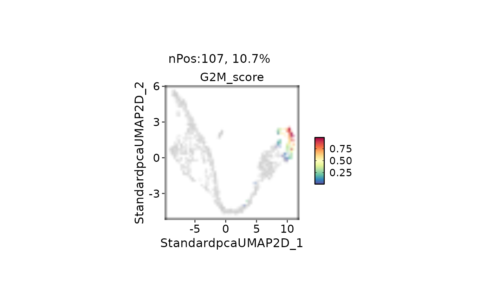
# Label and highlight cell points
FeatureDimPlot(
pancreas_sub,
features = "Rbp4",
reduction = "UMAP",
label = TRUE,
cells.highlight = colnames(
pancreas_sub
)[pancreas_sub$SubCellType == "Delta"]
)
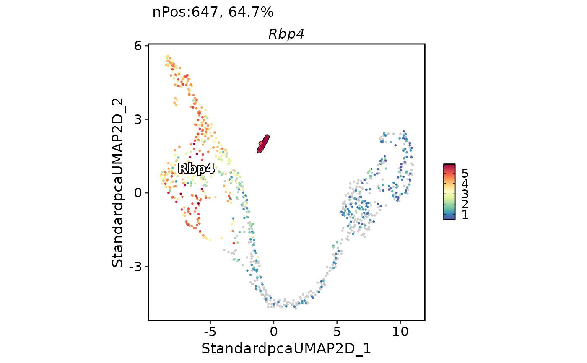
FeatureDimPlot(
pancreas_sub,
features = "Rbp4",
split.by = "Phase",
reduction = "UMAP",
cells.highlight = TRUE,
theme_use = "theme_blank"
)
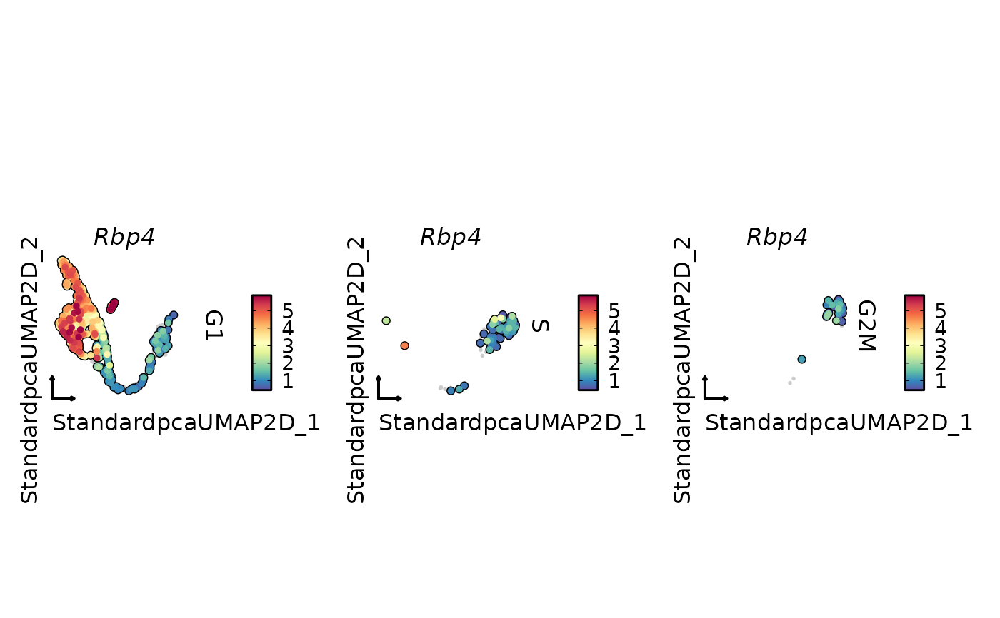
# Add a density layer
FeatureDimPlot(
pancreas_sub,
features = "Rbp4",
reduction = "UMAP",
label = TRUE,
add_density = TRUE
)
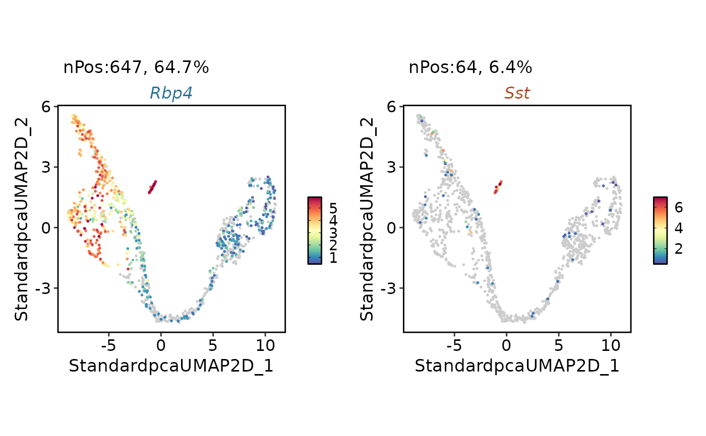
FeatureDimPlot(
pancreas_sub,
features = "Rbp4",
reduction = "UMAP",
label = TRUE,
add_density = TRUE,
density_filled = TRUE
)
#> Warning: Removed 396 rows containing missing values or values outside the scale range
#> (`geom_raster()`).
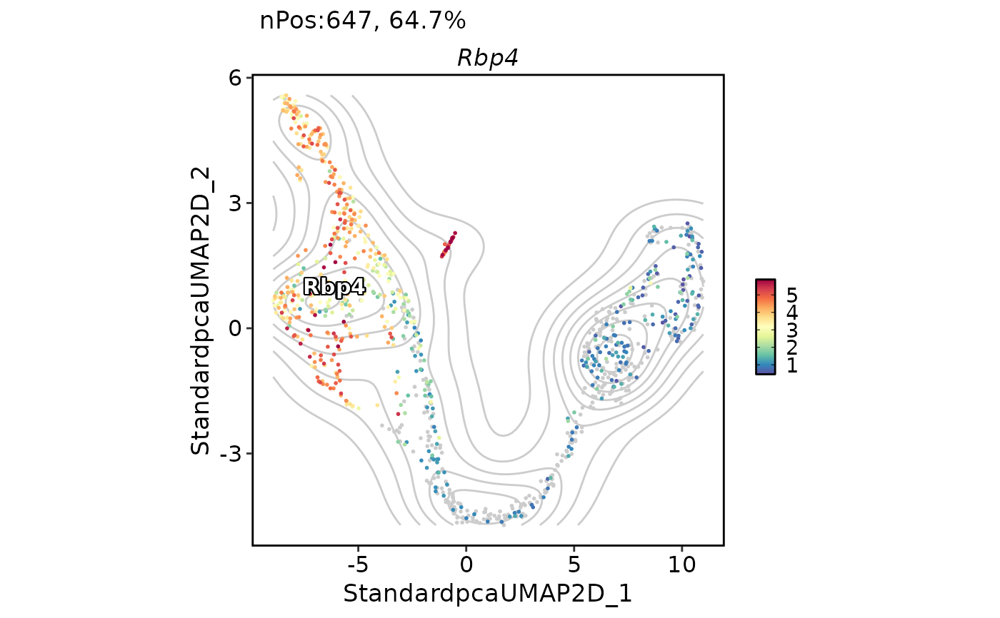
# Chane the plot type from point to the hexagonal bin
FeatureDimPlot(
pancreas_sub,
features = "Rbp4",
reduction = "UMAP",
hex = TRUE
)
#> Warning: Removed 4 rows containing missing values or values outside the scale range
#> (`geom_hex()`).
#> Warning: Removed 3 rows containing missing values or values outside the scale range
#> (`geom_hex()`).
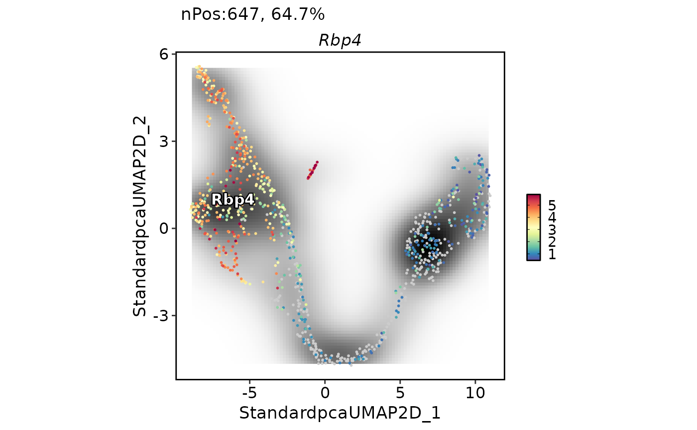
FeatureDimPlot(
pancreas_sub,
features = "Rbp4",
reduction = "UMAP",
hex = TRUE,
hex.bins = 20
)
#> Warning: Removed 3 rows containing missing values or values outside the scale range
#> (`geom_hex()`).
#> Warning: Removed 3 rows containing missing values or values outside the scale range
#> (`geom_hex()`).
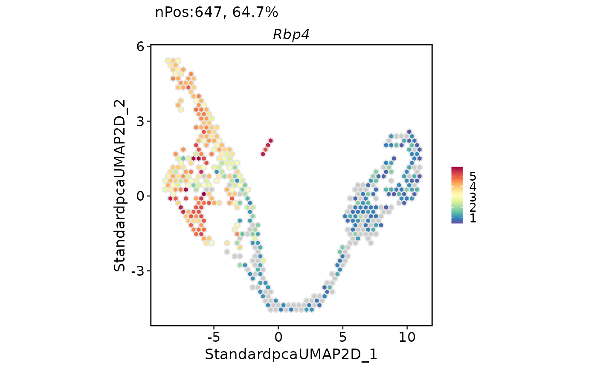
# Show lineages on the plot based on the pseudotime
pancreas_sub <- RunSlingshot(
pancreas_sub,
group.by = "SubCellType",
reduction = "UMAP"
)
#> Warning: Removed 7 rows containing missing values or values outside the scale range
#> (`geom_path()`).
#> Warning: Removed 7 rows containing missing values or values outside the scale range
#> (`geom_path()`).
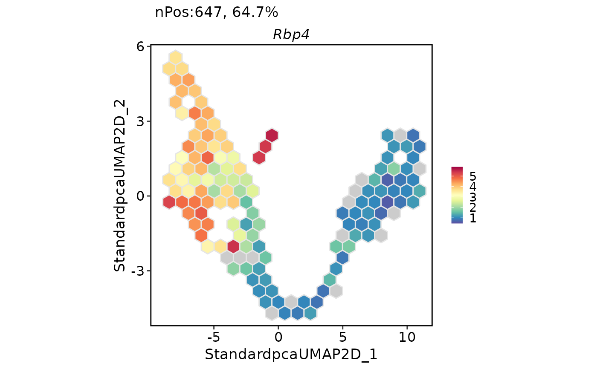
FeatureDimPlot(
pancreas_sub,
features = "Lineage2",
reduction = "UMAP",
lineages = "Lineage2"
)
#> Warning: `guide_colourbar()` cannot be used for colour_ggnewscale_1.
#> ℹ Use one of colour, color, or fill instead.
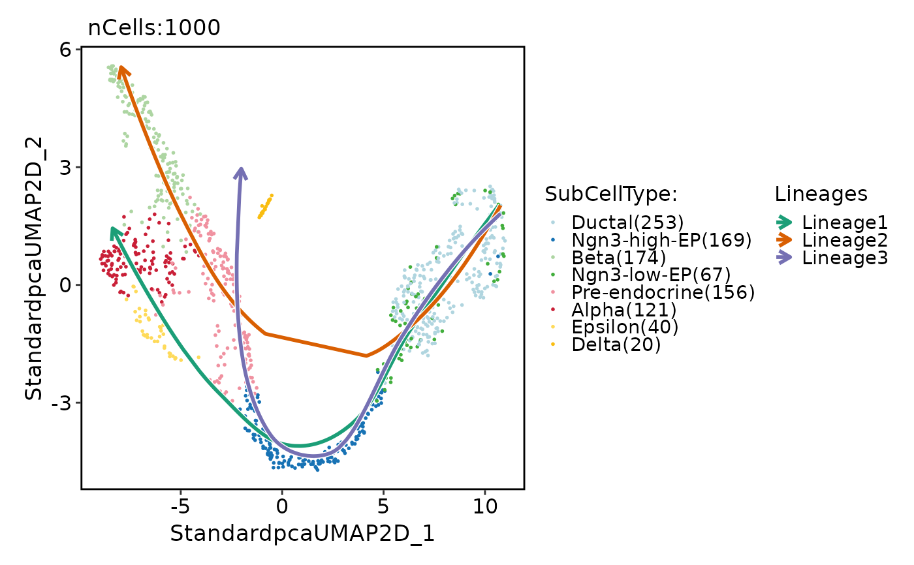
FeatureDimPlot(
pancreas_sub,
features = "Lineage2",
reduction = "UMAP",
lineages = "Lineage2",
lineages_whiskers = TRUE
)
#> Warning: `guide_colourbar()` cannot be used for colour_ggnewscale_1.
#> ℹ Use one of colour, color, or fill instead.
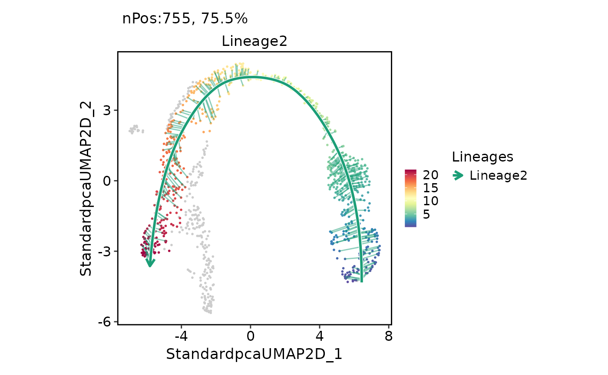
FeatureDimPlot(
pancreas_sub,
features = "Lineage2",
reduction = "UMAP",
lineages = "Lineage2",
lineages_span = 0.1
)
#> Warning: `guide_colourbar()` cannot be used for colour_ggnewscale_1.
#> ℹ Use one of colour, color, or fill instead.
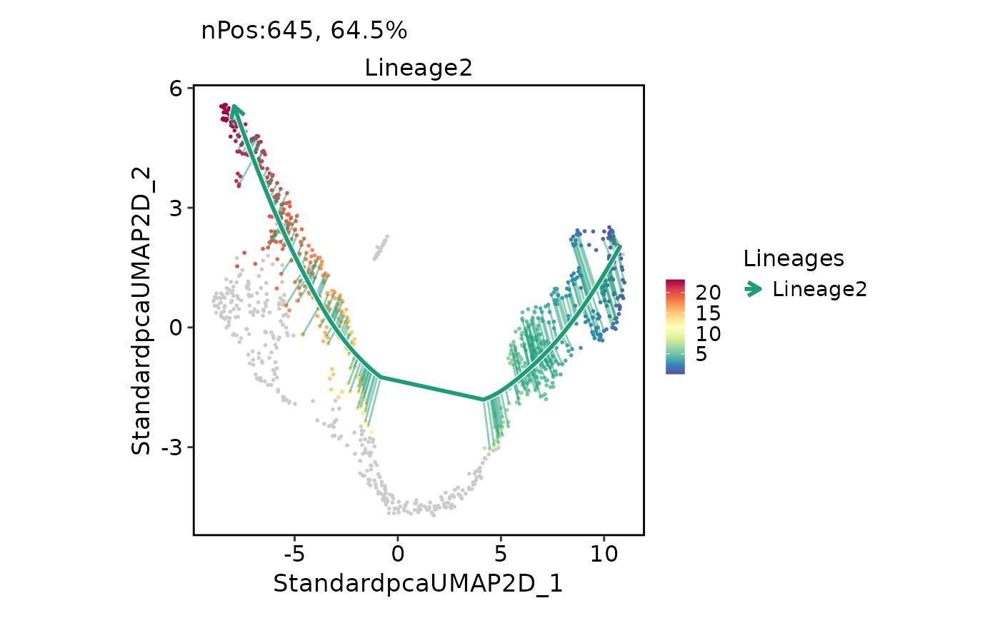
# Input a named feature list
markers <- list(
"Ductal" = c("Sox9", "Anxa2", "Bicc1"),
"EPs" = c("Neurog3", "Hes6"),
"Pre-endocrine" = c("Fev", "Neurod1"),
"Endocrine" = c("Rbp4", "Pyy"),
"Beta" = "Ins1",
"Alpha" = "Gcg",
"Delta" = "Sst",
"Epsilon" = "Ghrl"
)
FeatureDimPlot(
pancreas_sub,
features = markers,
reduction = "UMAP",
theme_use = "theme_blank",
theme_args = list(
plot.subtitle = ggplot2::element_text(size = 10),
strip.text = ggplot2::element_text(size = 8)
)
)
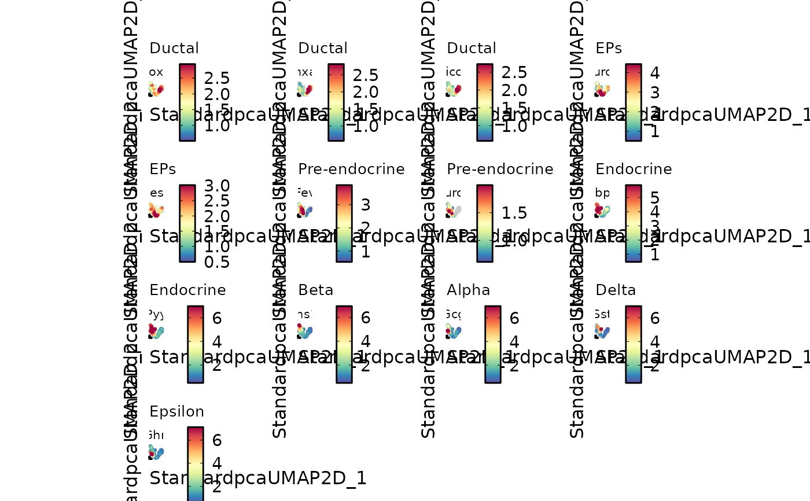
# Plot multiple features with different scales
endocrine_markers <- c(
"Beta" = "Ins1",
"Alpha" = "Gcg",
"Delta" = "Sst",
"Epsilon" = "Ghrl"
)
FeatureDimPlot(
pancreas_sub,
endocrine_markers,
reduction = "UMAP"
)
FeatureDimPlot(
pancreas_sub,
endocrine_markers,
reduction = "UMAP",
lower_quantile = 0,
upper_quantile = 0.8
)
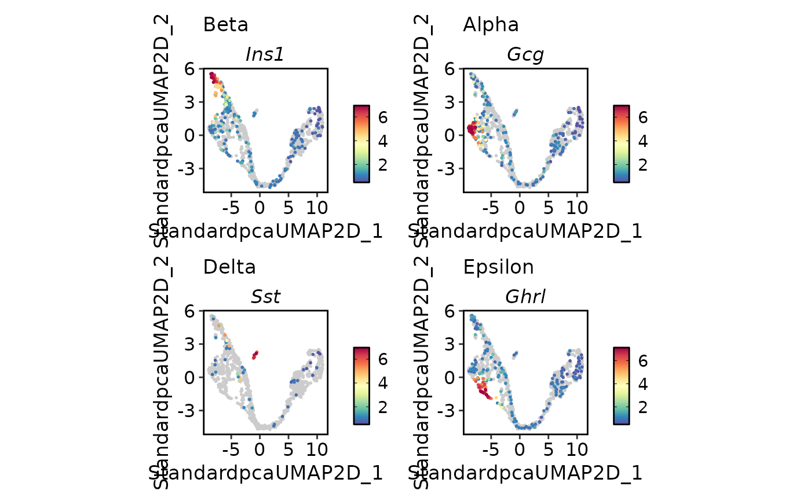
FeatureDimPlot(
pancreas_sub,
endocrine_markers,
reduction = "UMAP",
lower_cutoff = 1,
upper_cutoff = 4
)
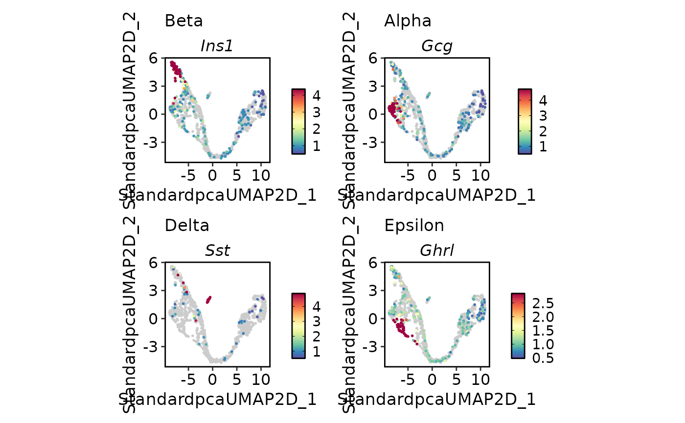
FeatureDimPlot(
pancreas_sub,
endocrine_markers,
reduction = "UMAP",
keep_scale = "all"
)
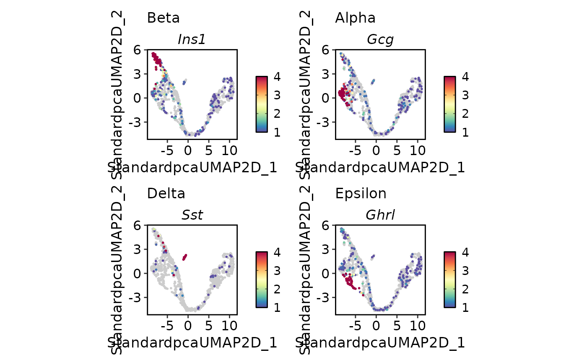
FeatureDimPlot(
pancreas_sub,
c("Delta" = "Sst", "Epsilon" = "Ghrl"),
split.by = "Phase",
reduction = "UMAP",
keep_scale = "feature"
)
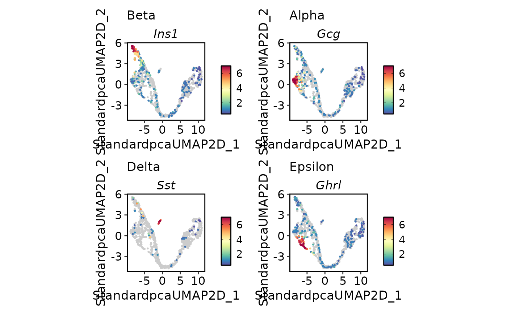
# Plot multiple features on one picture
FeatureDimPlot(
pancreas_sub,
features = endocrine_markers,
pt.size = 1,
compare_features = TRUE,
color_blend_mode = "blend",
label = TRUE,
label_insitu = TRUE
)
#> Warning: No shared levels found between `names(values)` of the manual scale and the
#> data's colour values.
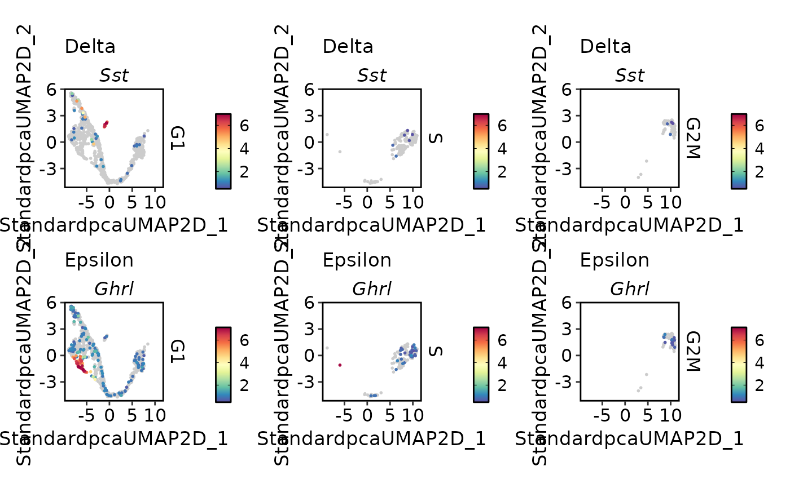
FeatureDimPlot(
pancreas_sub,
features = c("S_score", "G2M_score"),
pt.size = 1,
palcolor = c("red", "green"),
compare_features = TRUE,
color_blend_mode = "blend",
title = "blend",
label = TRUE,
label_insitu = TRUE
)
#> Warning: No shared levels found between `names(values)` of the manual scale and the
#> data's colour values.
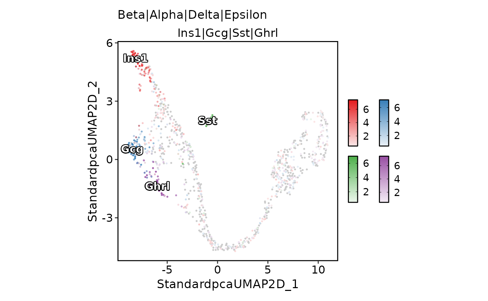
FeatureDimPlot(
pancreas_sub,
features = c("S_score", "G2M_score"),
pt.size = 1,
palcolor = c("red", "green"),
compare_features = TRUE,
color_blend_mode = "average",
title = "average",
label = TRUE,
label_insitu = TRUE
)
#> Warning: No shared levels found between `names(values)` of the manual scale and the
#> data's colour values.
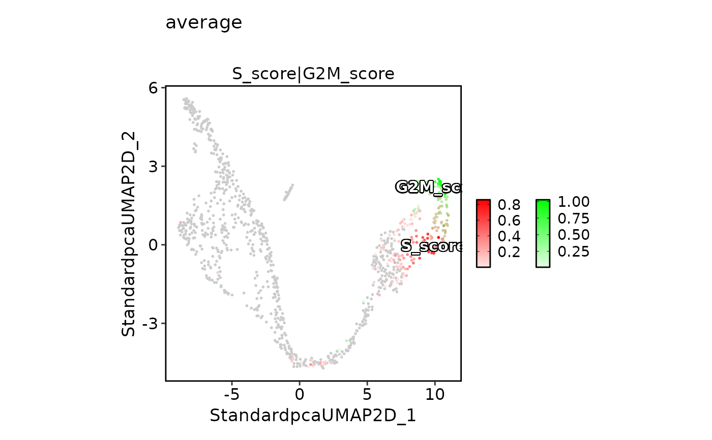
FeatureDimPlot(
pancreas_sub,
features = c("S_score", "G2M_score"),
pt.size = 1,
palcolor = c("red", "green"),
compare_features = TRUE,
color_blend_mode = "screen",
title = "screen",
label = TRUE,
label_insitu = TRUE
)
#> Warning: No shared levels found between `names(values)` of the manual scale and the
#> data's colour values.
 FeatureDimPlot(
pancreas_sub,
features = c("S_score", "G2M_score"),
pt.size = 1,
palcolor = c("red", "green"),
compare_features = TRUE,
color_blend_mode = "multiply",
title = "multiply",
label = TRUE,
label_insitu = TRUE
)
#> Warning: No shared levels found between `names(values)` of the manual scale and the
#> data's colour values.
FeatureDimPlot(
pancreas_sub,
features = c("S_score", "G2M_score"),
pt.size = 1,
palcolor = c("red", "green"),
compare_features = TRUE,
color_blend_mode = "multiply",
title = "multiply",
label = TRUE,
label_insitu = TRUE
)
#> Warning: No shared levels found between `names(values)` of the manual scale and the
#> data's colour values.
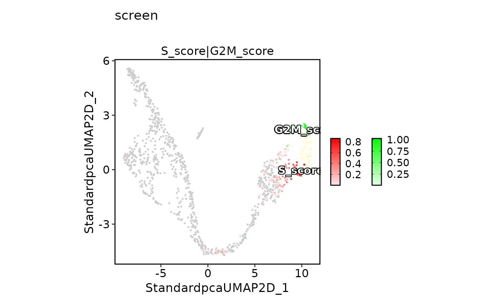